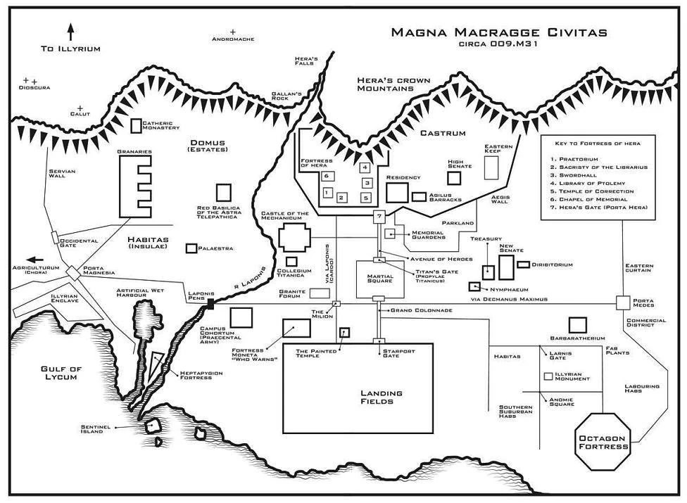

Macragge
| Macragge | |
|---|---|
| Capital of the Realm of Ultramar | |
 Macragge in an orbital survey of the Ultramarines' Librarius Artwork © Games Workshop | |
| System | Macragge System |
| Realm | Ultramar |
| Segmentum | Segmentum Ultima |
| Classification | Chapter world; Fortress world |
| Ruler | Roboute Guilliman, Lord of Ultramar; the Chapter Master of the Ultramarines (Marneus Calgar) as Lord Macragge |
| Population | c. 400 million |
| Capital | Magna Macragge Civitas |
| Tithe grade | Aptus Non (exempt) |
| Notable features | Fortress of Hera; Temple of Correction; Library of Ptolemy; Hera's Crown mountains; Valley of Laponis |
Macragge is the capital world of the realm of Ultramar, in the Segmentum Ultima, and the homeworld of the Ultramarines. It was the world on which the primarch Roboute Guilliman grew up, and from which he ruled Ultramar during the Great Crusade and the Horus Heresy. For ten thousand years it held the primarch's body in stasis in the Temple of Correction, and since his revival in 999.M41 it has again become the seat of a living primarch.[1][2]
Macragge is a cold, rugged world of mountains, high plains and seas. Its capital, Magna Macragge Civitas, lies beneath the mountains of Hera's Crown and is overlooked by the Fortress of Hera, the fortress-monastery of the Ultramarines. The planet was attacked by Konrad Curze during the Heresy and by Hive Fleet Behemoth in 745.M41, and its forces have fought in every war of the Era Indomitus that has touched Ultramar.[3][4]
History
[edit]Before the primarch
[edit]Macragge was settled during the Dark Age of Technology and survived the Age of Strife as a divided world. The cities of the lowlands, chief among them Macragge Civitas, were governed by a council and by two elected consuls, on a model the Ultramarines believe to be very ancient. The mountains and highlands were held by unruly tribes, and the civilisation of the plains was threatened by them, by the poverty of the age, and by its own failing institutions.[2][5]
Roboute Guilliman
[edit]The capsule carrying the infant Guilliman came down near Macragge Civitas, where he was found by the consul Konor Guilliman, who adopted him. The young primarch was raised among the city's governing class and given a classical education. He rose quickly to command, led the campaign that subdued the highland tribes of Illyrium, and, when his adoptive father was killed in a coup engineered by the other consul, Gallan, he put down the revolt, took power, and reformed the planet's government.[5]
Under Guilliman, Macragge was rebuilt into a prosperous and orderly state, and its influence spread to the neighbouring systems, which formed the first core of Ultramar. When the Emperor reached Macragge in the Great Crusade, Guilliman accepted him as his father and took command of the XIII Legion, which made Macragge its home.[5][2]
The Great Crusade and the Heresy
[edit]
During the Great Crusade, Macragge recruited and supplied the largest of the Space Marine Legions and served as the capital of the Five Hundred Worlds of Ultramar. When the Heresy broke out, the Ultramarines were mustering at Calth, and the Word Bearers' attack there, the Battle of Calth, began the Shadow Crusade against Ultramar. Cut off by the Ruinstorm, Guilliman made Macragge the capital of Imperium Secundus, a provisional state intended to preserve the Imperium in case Terra had fallen.[6]
During the time of Imperium Secundus, the primarch Konrad Curze of the Night Lords infiltrated Macragge and attacked his brothers within the Fortress of Hera, and fought both Guilliman and the Lion there. When it became clear that Terra still stood, Imperium Secundus was dissolved and its leaders turned to the relief of the Throneworld.[6][5]
The Imperial age
[edit]After the Heresy, Guilliman wrote the Codex Astartes on Macragge. When the primarch was struck down by the daemon primarch Fulgrim in M31, his body was returned to Macragge and placed in a stasis field on the Throne of Macragge, in the Temple of Correction. The temple became one of the greatest pilgrimage sites in the Imperium, visited by millions each year.[2][7]

In 745.M41 the Tyranid Hive Fleet Behemoth attacked Ultramar. The Ultramarines under Marneus Calgar made their stand on Macragge, and fought in the polar fortresses and in orbit. The First Company was destroyed in the defence of the northern polar fortress, and the hive fleet was destroyed in the Battle for Circe. The battle is described in the article Battle of Macragge.[3]
Later in M41 the Iron Warriors and the forces of the daemon prince M'kar the Reborn attacked Ultramar. In 999.M41, during the Thirteenth Black Crusade, the Celestinian Crusade that had escaped from Cadia reached Macragge through the webway. There, Archmagos Belisarius Cawl and the Aeldari prophet Yvraine restored Guilliman to life, and the primarch fought his way out of the Temple of Correction against the forces sent by Abaddon to prevent it.[4][8]
The Era Indomitus
[edit]Guilliman left Macragge for Terra in the Terran Crusade and went on to lead the Indomitus Crusade. During the Noctis Aeterna, Ultramar was attacked by the forces of Nurgle in the Plague Wars, and Macragge became the base from which the realm's defence was coordinated. Fleet Avenger brought the first Primaris Space Marines to the planet. After more than a century of the Indomitus Crusade, Guilliman returned to Ultramar, drove the forces of Mortarion back, and restored the realm.[4]
Since then Macragge has served as a capital of the Imperium Sanctus as well as of Ultramar. Guilliman has governed from it as Lord Commander when the crusade allows, and the Fortress of Hera has been expanded to hold the administrative and military offices of his staff.[4]
Geography
[edit]
Macragge is a temperate to cold world, with high mountain ranges, wide plains, deep valleys and stormy seas. Its polar regions are icebound and contain the Ultramarines' great polar fortresses. The planet's climate is harsh enough that much of its interior is thinly settled, and its people live mainly in cities on the coasts and in the valleys.[3]
- Magna Macragge Civitas, the capital, is a city of colonnades, domes, marble temples and broad avenues, built in the classical manner of Ultramar and laid out from the time of Guilliman.[3]
- The Fortress of Hera is the fortress-monastery of the Ultramarines, built into the mountains of Hera's Crown above the capital. It contains the Chapter's Librarius, its armouries and the Library of Ptolemy, one of the greatest archives in the Imperium.[3]
- The Temple of Correction, part of the northern polar fortress complex, held the body of Guilliman in stasis from M31 to 999.M41. It is crowned by a multi-coloured glass dome said to have been designed by Guilliman himself.[7]
- The Valley of Laponis, where the Ultramarines train and where the battles of the Chapter are commemorated, and the Sword Hall, where the Chapter's honoured dead are remembered.[3]
The Macragge System includes the shrine world Laphis, the agricultural world Nova Thulium, the death world Thulium, the hive world Ardium and the fortress world Mortendar. Orbital defence stations, star forts and minefields surround the planet.[3]
Society
[edit]Macragge preserves the civic culture of Ultramar in its purest form. Its people are taught from childhood the duties of citizens and soldiers, and every citizen is expected to serve in the planetary defence forces. Learning is prized, and the schola of the capital teach history, philosophy, rhetoric and the military arts. The Ultramarines recruit chiefly from Macragge and the other worlds of Ultramar, and an aspirant is expected to show discipline and education as well as strength.[2][3]
Government on Macragge is shared between the civil institutions of the planet, which descend from those of Guilliman's time, and the Ultramarines. The Chapter Master of the Ultramarines bears the title Lord Macragge and is lord of the realm in the primarch's absence. Since Guilliman's return the primarch himself rules, and Marneus Calgar has served under him. The planet's faith follows the Imperial Cult, tempered by the reverence for Guilliman and by the old civic virtues of Ultramar.[3][4]
Timeline
[edit]| Date | Event |
|---|---|
| 007.M31 | The Battle of Calth and the start of the Shadow Crusade against Ultramar. |
| c. 021.M31 | Roboute Guilliman completes the Codex Astartes on Macragge. |
| 121.M31 | Guilliman is mortally wounded by Fulgrim at Thessala and placed in stasis in the Temple of Correction on Macragge. |
| 745.M41 | Hive Fleet Behemoth attacks Macragge in the Battle of Macragge. |
| 999.M41 | The Iron Warriors' Invasion of Ultramar is defeated; the Ultramar Campaign of the Thirteenth Black Crusade follows. |
| 999.M41 | Belisarius Cawl and Yvraine resurrect Guilliman in the Temple of Correction; he resumes command of the Ultramarines. |
| 999.M41 | Guilliman leaves Macragge for Terra; the Terran Crusade sets out from the capital. |
| 999.M41 | The Great Rift opens; Guilliman begins the Indomitus Crusade from Macragge. |
| c. 000–012.M42 | Guilliman returns to Macragge to fight the Plague Wars in Ultramar against Nurgle. |
| Early M42 | Macragge is the seat of the Lord Macragge and the capital of Ultramar. |
See also
[edit]
References
[edit]- ^ 1, Graham McNeill (Artwork here from Defenders of Ultramar Issue. Defenders of Ultramar (Graphic Novel). Black Library, pp. 5, 8). McNeill, Graham. Dead Sky, Black Sun (novel). Black Library, Chapter One.
- ^ a b c d e McNeill, Graham. The Chapter's Due (novel). Black Library. Codex: Adeptus Astartes - Space Marines (8th Edition), pp. 22-31, 44, 47, 49, 63, 134, 154-155, 193. Games Workshop.
- ^ a b c d e f g h i Warhammer 40,000: Rulebook (8th Edition), pg. 154. Games Workshop. Counter, Ben. Battle for the Abyss (novel). Black Library.
- ^ a b c d e Swallow, James. Garro: Oath of Moment (Audio Book). Black Library. Dembski-Bowden, Aaron. The First Heretic (novel). Black Library.
- ^ a b c d Dembski-Bowden, Aaron. Betrayer (novel). Black Library. Reynolds, Anthony. Dark Heart (novella). Black Library.
- ^ a b Abnett, Dan. The Unremembered Empire (novel). Black Library. McNeill, Graham. Nightbringer (novel). Black Library.
- ^ a b McNeill, Graham. Courage and Honour (novel). Black Library. Haley, Guy. Dark Imperium (novel). Black Library.
- ^ Gathering Storm - Part Three - Rise of the Primarch (7th Edition), pp. 4-93. Games Workshop. Codex: Space Marines (7th Edition) (Digital Edition), "Ultramar". Games Workshop.